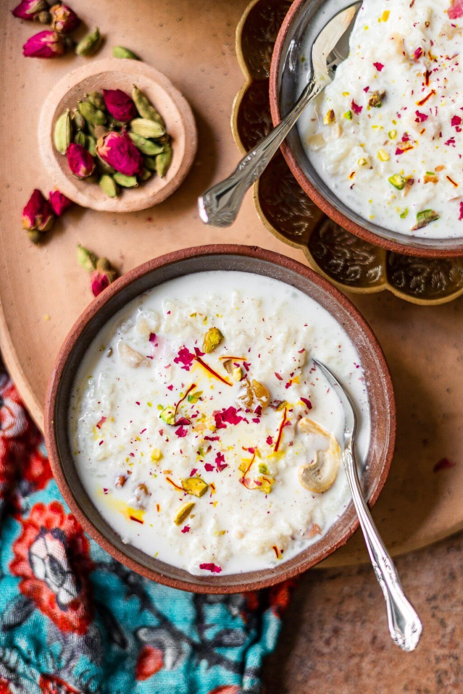
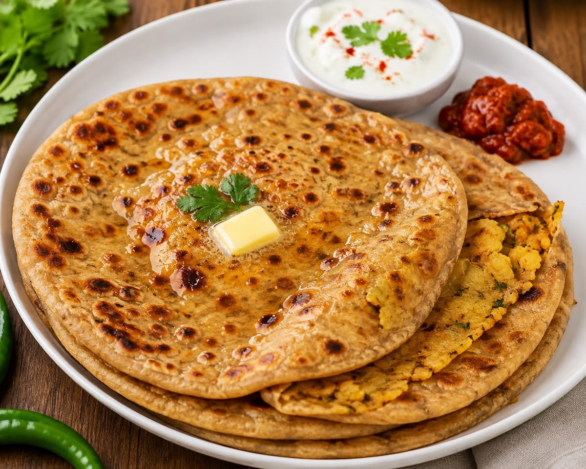
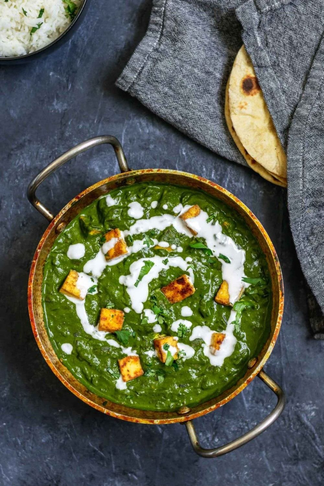
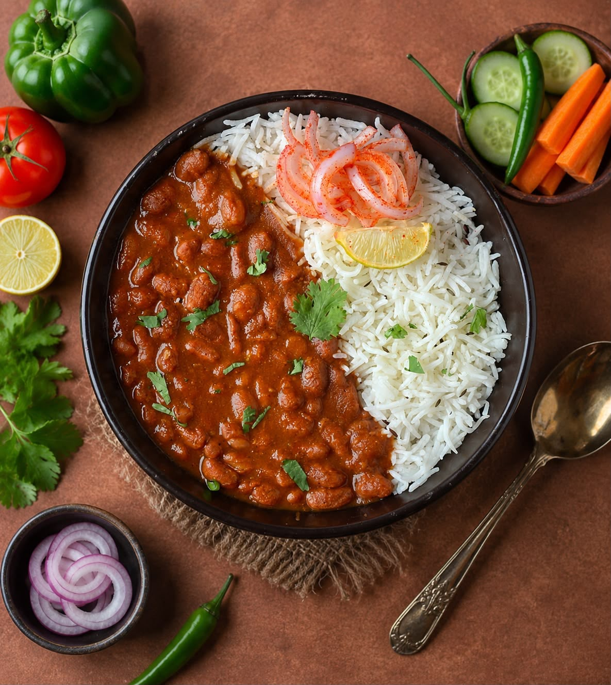
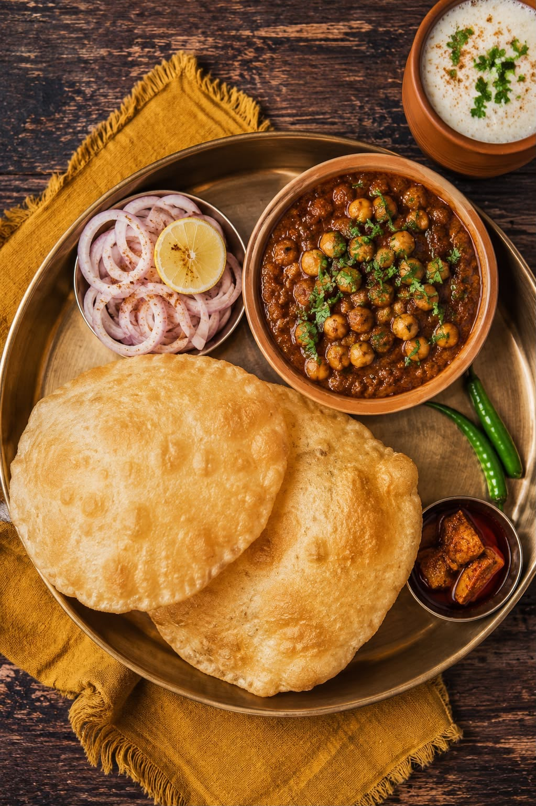
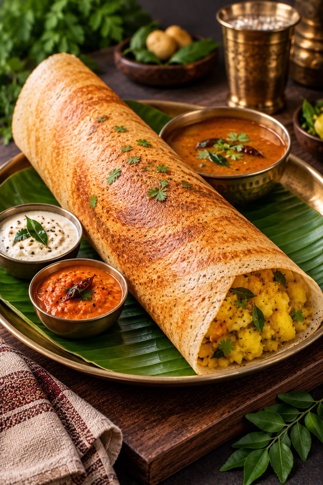

Butter Chicken Masala (Murgh Makhani)
North India • Delhi ClassicTender charcoal-grilled tandoori chicken simmered in a velvety tomato-butter-cream makhani gravy perfumed with kasoori methi.
View Full Step-by-Step Recipe →
Traditional Rice Kheer (Payasam)
Pan-Indian • Festival DessertFragrant basmati rice slow-simmered in whole milk until thick and caramelized, infused with green cardamom, Kashmiri saffron, and roasted nuts.
View Full Step-by-Step Recipe →
Punjabi Stuffed Aloo Paratha
North India • PunjabFlaky, golden whole wheat flatbread stuffed with spiced mashed potatoes, fresh green chillies, coriander, and carom seeds, served with white butter.
View Full Step-by-Step Recipe →
Homestyle Palak Paneer
North India • Dhaba FavoriteFresh cottage cheese cubes folded into a vibrant emerald gravy of blanched spinach, garlic, ginger, and cumin, finished with fresh cream.
View Full Step-by-Step Recipe →
Punjabi Rajma Chawal
North India • Ultimate ComfortRed kidney beans slow-simmered in an onion-tomato gravy with ginger, garlic, and whole garam masalas, served with steaming jeera rice.
View Full Step-by-Step Recipe →
Amritsari Pindi Chole & Bhature
Punjab • Street RoyaltyDark, tea-infused chickpeas cooked with wild dried pomegranate seeds and ajwain, paired with crispy puffed sourdough bhature.
View Full Step-by-Step Recipe →
Udupi Style Masala Dosa
South India • KarnatakaCrispy fermented rice and lentil crepe rolled with mustard-tempered potato masala, served with fresh coconut chutney and sambar.
View Full Step-by-Step Recipe →